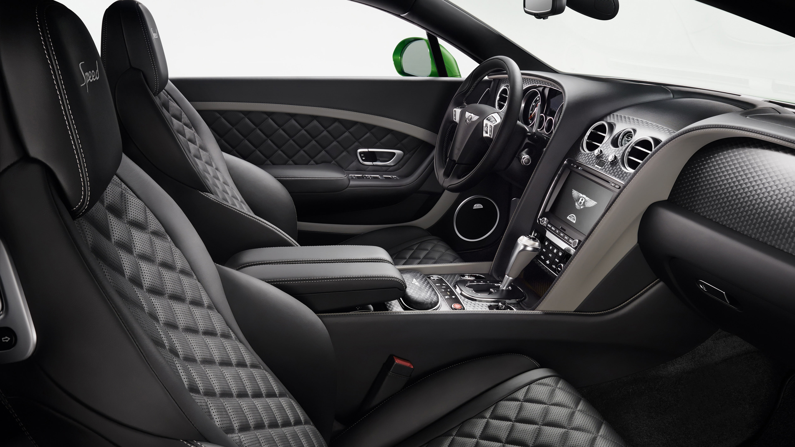
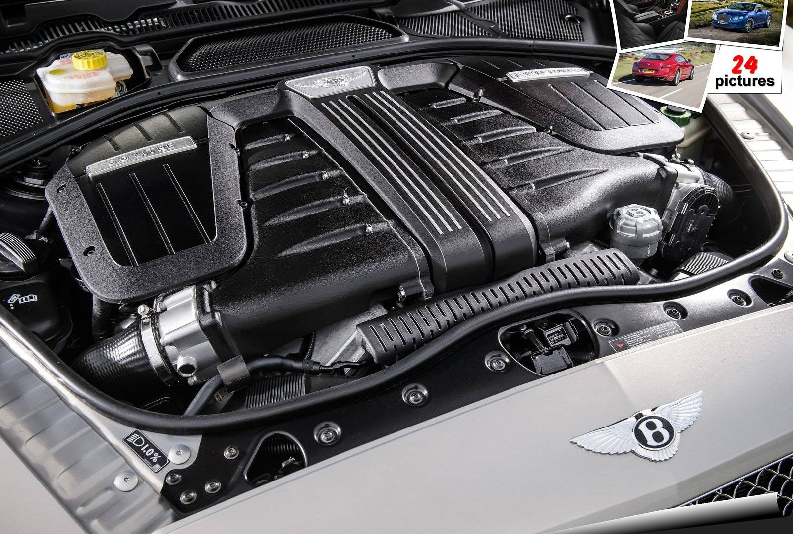

Veja detalhes do interior
Recebe acabamento em Alcantara preto e couro impera, além de painéis em fibra de carbono.As costuras vermelhas espalhadas pelos bancos, portas, painel de bordo e volante fazem o contraste, para a escolha outras 15 cores disponiveis, além de 11 cores de couro e oito tipos de madeira para os detalhes entre costura dos assentos e pequenos detalhes no teto e portas.

Motor
Um W12 6.0 recebeu tratamento especial por parte da engenharia da Bentley.659 cv
91,8 kgfm
Suficientes para levar este Gran Tourer aos 335 km/h e alcançar os 100 km/h em 3,5 segundos.
Motor combinado ao câmbio automatizado de dupla embreagem com oito marchas, que a Bentley diz ser duas vezes mais rápida nas trocas quando em modo Sport na comparação com o Continental GT W12 convencional.
